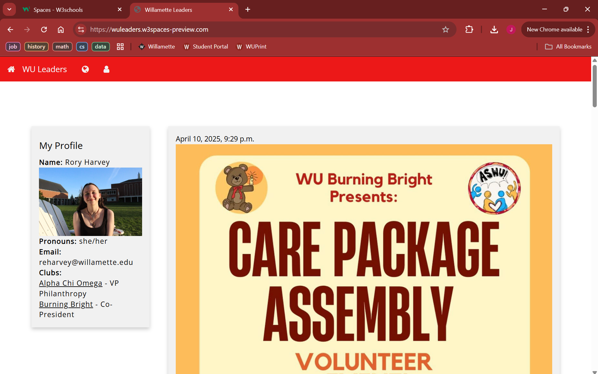
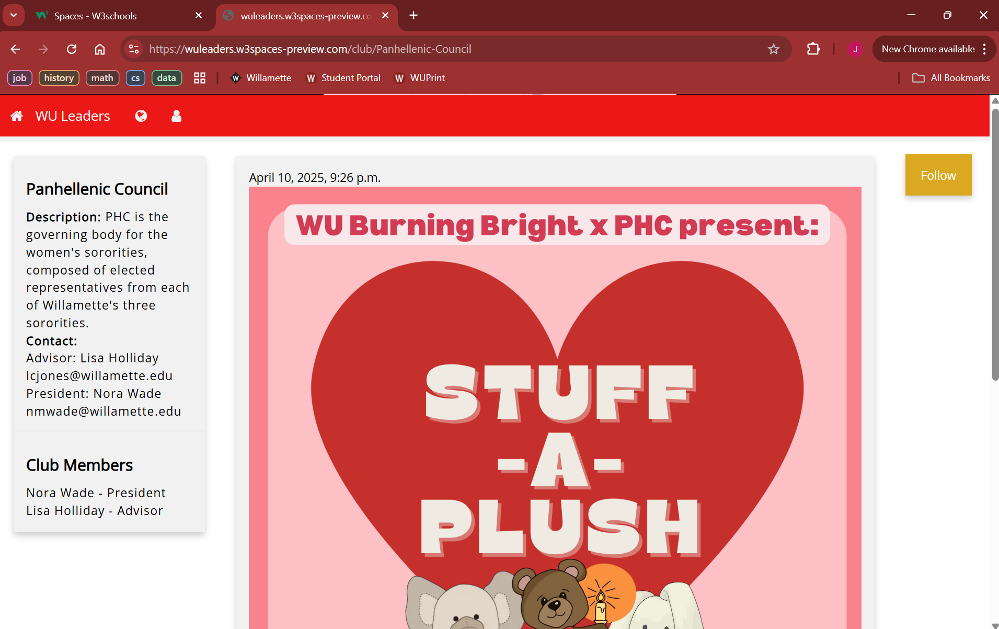

WU Leaders: Interactive Club Connection Website
A dynamic website project designed to help Willamette University students discover clubs, view events, manage profiles, and connect with student organizations through one campus-specific platform.
Project Overview
This collaborative project focused on improving communication between club leaders, club members, and students at Willamette University. We built an interactive website concept where students could explore campus organizations, follow clubs, view event posts, and manage personal profile information.
Unlike a static informational website, WU Leaders was designed around user interaction, student access, profiles, club pages, and role-based functionality. The project strengthened my understanding of how dynamic websites are structured, how users move through an application, and how technical decisions affect usability and privacy.
Problem
Student club communication is often spread across different platforms, group chats, emails, and social media pages. This can make it difficult for students to discover clubs, keep track of events, contact leaders, or understand how to get involved. WU Leaders explored how a centralized, campus-specific website could make club participation more accessible and organized.
Platform Features
The website was designed for two main user groups: club leaders and club members. Club leaders needed tools for posting events, communicating with members, managing club pages, and controlling member permissions. Club members needed a way to follow clubs, view events, create profiles, and connect with other students.
- Student access: Willamette-only login/sign-up concept using university email addresses
- Main feed: centralized homepage for club posts and event announcements
- Personal profiles: student pages with club involvement and contact information
- Club directory: browsable list of student organizations
- Club pages: organization profiles with descriptions, members, and event posts
- Role-based views: different options for executive members, members, and non-members
Technical Approach
1. Dynamic Website Structure
We designed the project as a dynamic website rather than a simple static page. This meant thinking through user accounts, profile information, club records, event posts, and pages that changed depending on the user’s relationship to a club.
2. User-Centered Design
We planned the website around specific user stories for club leaders and club members. These user stories helped define features such as following clubs, posting events, viewing members, editing club pages, and managing executive permissions.
3. Access, Privacy, and Scale
We considered how to protect student information, limit access to Willamette users, and design the platform for a realistic campus audience. Important considerations included email verification, data privacy, protected profile information, and moderation tools.
Tools and Skills
- Frontend: HTML, CSS, JavaScript
- Backend / logic: Python
- Data concepts: SQL, user profiles, club records, and event posts
- Design: accessibility, navigation, user flows, and campus branding
- Product thinking: user roles, permissions, privacy, and feature prioritization
Key Results
- Built a working interactive website concept for a campus-specific club communication platform.
- Created user flows for both club leaders and club members, including different permissions and page views.
- Developed pages for login, a main feed, personal profiles, a club directory, and individual club profiles.
- Presented the project as a technical and community-focused solution for improving student organization communication.
Example Screens


Future Improvements
Because this was an early web development project, several features were identified as next steps for making the platform more secure, useful, and realistic for campus deployment.
- Email verification for stronger Willamette-only access
- Improved data privacy and protection of profile information
- Commenting and direct messaging between users
- Members-only content for club pages
- More advanced moderation and permission tools for club leaders
Takeaways
- Learned how dynamic websites differ from static websites
- Built experience with user roles, permissions, and access control
- Practiced translating user needs into website features
- Improved my ability to explain a technical product through a presentation and demo